Integration 1
_________________________________________________________________________________
The ratint function
| > | myarctan :=
proc(y,x) `if`(nargs = 1, arctan(y),evalf(Pi/2)-arctan(expand(x/y))); end: myarctanh := (y) -> myln(1+y)/2 - myln(1-y)/2: myln := proc(u) local c,d,v; d := degree(u,x); c := coeff(u,x,d); v := expand(x^d + (u-c*x^d)/c); if d = 1 then v := abs(v); fi; ln(v); end: |
| > | ratint :=
proc(f,x) local g; g := int(f,x); if has(g,{RootOf,int}) then g := int(convert(evalf(f),parfrac,x),x); fi; g := eval( subs(ln=myln,arctan = myarctan,arctanh=myarctanh, signum=1,abs=(x->x), g)); g := expand(g); if (type(g,`+`)) then g := remove((a)->type(a,constant),g); fi; g; end: |
Various rational functions
| > | g[1] := (x) -> x^2 + x + 1 + 1/x + 1/x^2; |
| > | g[2] := (x) -> 1/(x-1) + 1/(x^2-1) + 1/(x^3-1); |
| > | g[3] := (x) -> 1/(x-1)^2 + 1/(x-2)^3 + 1/(x-3)^4; |
| > | g[4] := (x) -> 1/(x+1) + 1/(x^2+1) + 1/(x^3+1); |
| > | g[5] := (x) -> x/(x+1)*(x+2)/(x+3)*(x+4); |
| > | g[6] := (x) -> x/(x+1)^2*(x+2)/(x+3)^2*(x+4); |
| > | g[7] := (x) -> (x^3+4*x^2+x+2)/(x-1)^2/(x+1)^3; |
| > | g[8] := (x) -> 1/(x^2+8*x+1); |
| > | g[9] := (x) -> (x^2+1)^(-5); |
| > | g[10] := (x) -> 1/(x^8+x^2+1); |
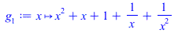 |
|
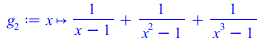 |
|
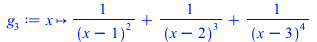 |
|
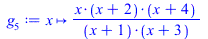 |
|
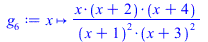 |
|
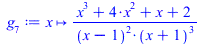 |
|
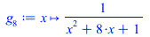 |
|
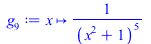 |
|
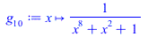 |
(2.1) |
| > |
______________________________________________________________________________
Exercise 1
When  is large,
is large,  is approximately
is approximately  . Indeed, the formula for
. Indeed, the formula for  is as follows:
is as follows:
| > | y := ratint(((x^3+1)/(x^2+1))^3,x); |
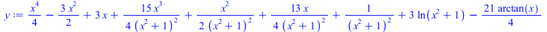 |
(1) |
The first term is 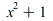 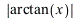 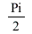 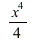 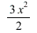 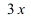 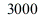 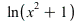 , and the other terms are much smaller, at least when
, and the other terms are much smaller, at least when  is large. Indeed, when
is large. Indeed, when 
is large, all of the terms with
the theory of trigonometric functions that
in comparison to  for large
for large  . The terms
. The terms  and
and  will get large as
will get large as  does, but much more
does, but much more
slowly than  does. For example, when
does. For example, when  , the term
, the term
but in fact it grows much more slowly even than  , as you could check by plotting the graph.
, as you could check by plotting the graph.
We can ask Maple to separate the terms as follows:
| > | terms := [op(y)]; |
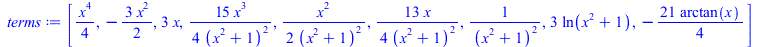 |
(2) |
We can then check the relative size when 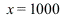
| > | evalf(subs(x=1000,terms)); |
| (3) |
You can see that the first term is much bigger than the rest. We can also see this by plotting.
In the picture below, the red curve is  , and the other terms are plotted in various different colours.
, and the other terms are plotted in various different colours.
By  , the red curve is already much bigger than the others. If you change the range to 1..100
, the red curve is already much bigger than the others. If you change the range to 1..100
(say) then only the red curve is visible because all other terms are squashed down onto the  axis.
axis.
| > | plot(terms,x=1..5); |
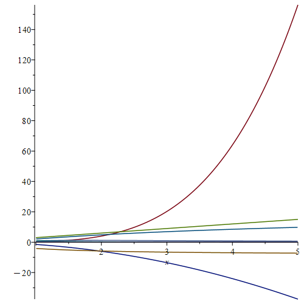 |
We can also just plot 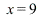 and
and  together. If we stop at
together. If we stop at
the two curves, but if we went much further than that then they would be indistinguishable.
| > | plot([y,x^4/4],x=-9..9); |
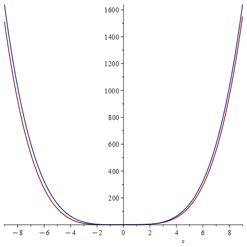 |
| > | unassign('y','terms'); |
_________________________________________________________________________________
Exercise 2
Here is the formula for  :
:
| > | y := ratint((a*x^2+b)/(c*x^2+d),x); |
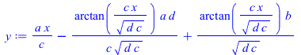 |
(4) |
This is 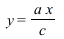 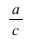 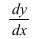 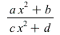 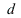 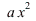 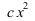 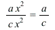 is large. One way to see this is to look at
is large. One way to see this is to look at  when
when  is large, or in other words, the limit of
is large, or in other words, the limit of  tends to infinity. Of course
tends to infinity. Of course  is just the function we first thought of, namely
is just the function we first thought of, namely  is very large,
is very large,  and
and
| > | limit(diff(y,x),x=infinity); |
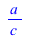 |
(5) |
We can see this graphically if we choose some numbers for 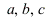 .
.
| > | plot(subs(a=7,b=-3,c=2,d=8,[y,a*x/c]),x=10..100); |
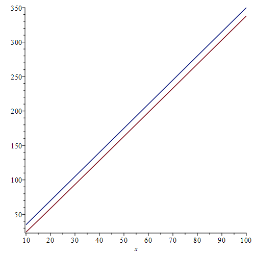 |
| > | unassign('y'); |
_________________________________________________________________________________
Exercise 3
(a) It is true that the integral of a rational function can contain terms like 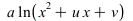
| > | y := (8*x+8)/(x^2+2*x+3); |
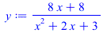 |
(6) |
| > | ratint(y,x); |
| (7) |
or more generally:
| > | y := a*(2*x+u)/(x^2+u*x+v); |
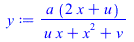 |
(8) |
| > | ratint(y,x); |
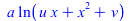 |
(9) |
(b) It is not true that terms like  can occur in the integral of a rational function
can occur in the integral of a rational function  .
.
If there were a term 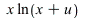 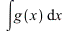
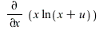 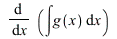
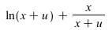 , which is not allowed, as
, which is not allowed, as  is supposed to be a rational function.
is supposed to be a rational function.
(c) For essentially the same reason, there cannot be any terms like 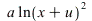
of a rational function, because 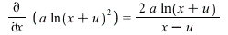
a term in a rational function.
_________________________________________________________________________________
Exercise 4
If 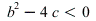 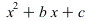 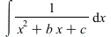
the  function. Here is an example:
function. Here is an example:
| > | b := 2; c := 3; b^2-4*c; |
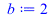 |
|
| (10) |
| > | plot(x^2+b*x+c,x=-2..1,0..6);
|
| > | ratint(1/(x^2+b*x+c),x); |
| > |
| (11) |
If then the function  has only one real root (where the graph
has only one real root (where the graph
touches the  axis but does not cross it) and the integral involves neither nor ; in fact, it just
axis but does not cross it) and the integral involves neither nor ; in fact, it just
has the form . Here is an example:
| > | b := 4; c := 4; b^2-4*c; |
| (12) |
| > | plot(x^2+b*x+c,x=-4..1,0..6);
|
| > | ratint(1/(x^2+b*x+c),x); |
| > |
| (13) |
If then the function  has two real roots, and the integral is a
has two real roots, and the integral is a
sum of two terms involving  . Here is an example:
. Here is an example:
| > | b := -5; c := 4; b^2-4*c; |
| (14) |
| > | plot(x^2+b*x+c,x=-1..5);
|
| > | ratint(1/(x^2+b*x+c),x); |
| (15) |
| > | unassign('b','c'); |
_________________________________________________________________________________
Exercise 5
Terms like  in
in  are associated with places where
are associated with places where  blows up to infinity (which
blows up to infinity (which
are known as the poles of  ). More precisely, if there is a term
). More precisely, if there is a term  in the integral, then
in the integral, then
 must blow up at
must blow up at  . Conversely, if
. Conversely, if  blows up at then there will usually be a term
blows up at then there will usually be a term
in the integral, but not always; there may instead be terms of the form . The
functions  and are examples of this.
and are examples of this.
Here we consider ; there are poles at  and
and  , and corresponding terms
, and corresponding terms 
and in the integral.
| > | y := g[2](x); z := ratint(y,x); |
| (16) |
| > | plot([y,z],x=-5..5,-10..10); |
Here we consider  . There are no
. There are no  terms in the integral, but nonetheless there are poles
terms in the integral, but nonetheless there are poles
at  ,
,  and
and  .
.
| > | y := g[3](x); z := ratint(y,x); |
| (17) |
| > | plot([y,z],x=0..5,-100..100,numpoints=400); |
Here we consider . There is a pole at , and a corresponding term in the
integral.
| > | y := g[4](x); z := ratint(y,x); |
| (18) |
| > | plot([y,z],x=-5..5,-10..10); |
_________________________________________________________________________________
Exercise 6
We only get terms like  or
or  in if the denominator of
in if the denominator of  has repeated roots.
has repeated roots.
A repeated root at  gives a factor in the denominator, with . This gives a term in the integral (and possibly also some terms like for smaller values of ).
gives a factor in the denominator, with . This gives a term in the integral (and possibly also some terms like for smaller values of ).
Here we consider :
| > | y := g[3](x); |
| (19) |
The denominator has repeated roots at  , and
, and  :
:
| > | d := denom(factor(y)); |
| (20) |
These show up in the graph of  as points where the graph touches the
as points where the graph touches the  axis without crossing it,
axis without crossing it,
or where it crosses but the tangent line at the crossing point is horizontal:
| > | plot(d,x=0..4,-0.3...0.3); |
The integral has terms of the form for and  .
.
| > | ratint(y,x); |
| (21) |
Here we consider  :
:
| > | y := g[4](x); |
| (22) |
The denominator has a root at  , which is not repeated:
, which is not repeated:
| > | d := denom(factor(y)); |
| (23) |
This is visible in the graph of  . Note that where the graph meets the
. Note that where the graph meets the  axis, the tangent line is not
axis, the tangent line is not
horizontal, corresponding to the fact that the root is not repeated.
| > | plot(d,x=-2..2,-10..10); |
The integral has no terms of the form  .
.
| > | ratint(y,x); |
| (24) |
| > |
Here we consider :
| > | y := g[6](x); |
| (25) |
The denominator has repeated roots at  and
and  :
:
| > | d := denom(factor(y)); |
| (26) |
These visible in the graph of  , as points where the curve meets the axis without crossing it.
, as points where the curve meets the axis without crossing it.
Note that the tangent line is horizontal at these points.
| > | plot(d,x=-4..2,-10..10); |
The integral has terms of the form for and  .
.
| > | ratint(y,x); |
| (27) |
We now integrate some random rational functions, and observe that we do not get any terms like
 . The reason is simply that the denominator is a random polynomial, which will almost
. The reason is simply that the denominator is a random polynomial, which will almost
never have repeated roots. The roots of a random polynomial are randomly distributed, so it
would be a big coincidence for two roots to be in the same place, and this does not often happen.
| > | r := randpoly(x)/randpoly(x); |
| (28) |
| > | ratint(r,x); |
| (29) |
| > |
| > | r := randpoly(x)/randpoly(x); |
| (30) |
| > | ratint(r,x); |
| (31) |
| > |
| > | r := randpoly(x)/randpoly(x); |
| (32) |
| > | ratint(r,x); |
| (33) |
| > |